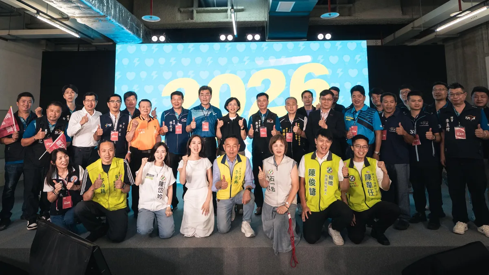
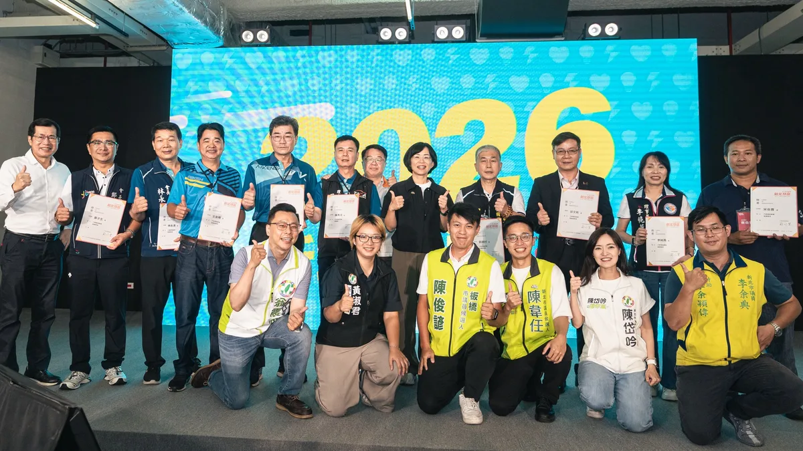
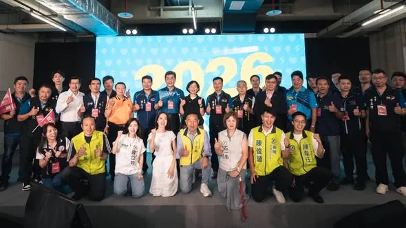
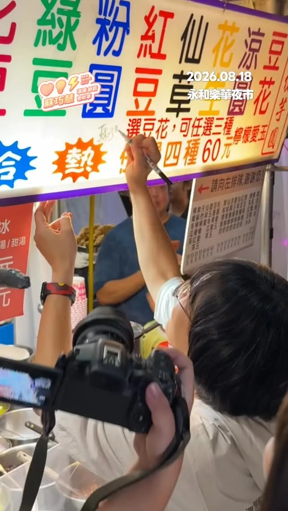

蘇巧慧su.chiaohui
@su.chiaohui:TVBS專訪新北市長候選人蘇巧慧 第一次聽到有人用辦活動來紓壓？？？ ✨「水獺媽媽樂園」把知識融入遊戲，讓孩子邊玩邊學！ ✨手遊「皮克敏」紀錄巧慧努力跑行程的痕跡，讓新北29區都開滿花朵！ ✨巧慧要讓新北各區的特色被更多人看見，讓住在新北的大家，都能為這座城市感到驕傲！ 觀看連結🔗 https://youtu.be/bkEJHtAepS0?si=QXXVnNCar7x4IGlw
Accounts
| 平台 | 帳號 | 已收錄貼文 | 最後更新 |
|---|---|---|---|
| 官網 | https://chiao.tw/ | 0 | — |
| https://www.facebook.com/chiaohui.su | 77 | 2026-08-21 22:45 | |
| https://www.instagram.com/su.chiaohui/ | 83 | 2026-08-22 10:59 | |
| YouTube | https://www.youtube.com/channel/UCBybqVtDU2YgADc8tBqUz5A | 58 | |
| LINE 官方帳號 | http://line.me/ti/p/%40suchiaohui | 0 | — |
| Threads | https://www.threads.com/@su.chiaohui | 113 | 2026-08-22 21:56 |
| Podcast | https://open.spotify.com/show/06fXdjNXspAe1QLML8EsAv | 0 | — |
Timeline
顯示 331 / 331 則
@su.chiaohui:TVBS專訪新北市長候選人蘇巧慧 第一次聽到有人用辦活動來紓壓？？？ ✨「水獺媽媽樂園」把知識融入遊戲，讓孩子邊玩邊學！ ✨手遊「皮克敏」紀錄巧慧努力跑行程的痕跡，讓新北29區都開滿花朵！ ✨巧慧要讓新北各區的特色被更多人看見，讓住在新北的大家，都能為這座城市感到驕傲！ 觀看連結🔗 https://youtu.be/bkEJHtAepS0?si=QXXVnNCar7x4IGlw

誰想得到，20年前我和兩位法律系學弟，20年後會一起成為市長候選人🤣

上千組親子一起玩！#水獺媽媽樂園 雙和場大成功🎉 現場不只有好玩的遊戲，這次我們特別邀請 @yisingkuo 義興閣掌中劇團，將傳統布袋戲結合搖滾音樂，用新潮又有趣的方式演出台灣的在地文化，讓大小朋友看得目不轉睛，笑聲不斷！還有許多有趣的互動關卡，讓孩子邊玩邊學台語、瞭解知識，更帶著滿滿的收穫和快樂回家！ 暑假最後一場就在土城！還沒來過的大小朋友，千萬別錯過囉！ 📍水獺媽媽樂園 土城場 時間｜8/22（六）09:00-16:00 地點｜樂利國小樂利廣場（土城區裕生路65號）

❤️巧慧貼心顧長輩！政見一次看！ 新北市有超過82萬的長者人口，因此照顧長輩，是我擔任新北市長最重要的工作之一，未來我會重點推動： ✅ #敬老卡每月1000點，可以搭公車、買東西，生活更便利。 ✅ 長輩 #假牙補助最高5萬元，有好的牙口吃飯，身體更健康。 ✅ 入住住宿式長照機構補助提升至 #每年24萬元，為家庭減負擔。 ✅ 簡化機構與照顧者行政負擔，讓照顧者能把精力留在專業發揮上。 ✅ 出院後居家服務和輔具 #一次到位，同時帶入 #專業復能，確保照顧不中斷。 ✅ 發展 #AI智慧照顧，減輕照顧人力負擔，並建立 #以租代買 平台，降低導入門檻。 未來，我不但會推動長輩福利、提高長照量能與補助，也會以新觀念成為「照顧者的照顧者」，讓新北長輩安心生活，也實質為家庭、照顧者減輕負擔，打造更溫暖的長照環境！

選前99天，清晨四點半出發！感謝板橋果菜市場好朋友們的熱情加油🎉 新北隊一起團結繼續衝！

倒數100天！蔡英文 Tsai Ing-wen小英總統親自領軍，新北隊全力衝！ 16年前，也曾經是新北市長候選人的小英總統，在任8年帶領台灣走向世界，賴清德總統接棒後讓台灣更加茁壯。如今小英總統成為我們的競選總部主任委員，再次和新北隊集結，她和大家分享「16年後，我們更強了！」 過去700多天，我們扎扎實實的勤跑新北29區，和議員舉辦超過40場地方座談會，市場掃街即將邁入第50場。最後100天，我們會拚盡全力，拿出一百二十分的努力，握到每一雙手，新北隊一起衝！2026、新北會贏！

@su.chiaohui:@tsai_ingwen 小英總統、蘇巧慧競選總部主委，也穿上我們最新的新北隊戰袍！2026、新北會贏！ 最後一百天全力衝！！

我和視光產業界的好朋友們，一起催生了北台灣第一所醫大視光學系，為台灣培育更多人才，也一起完善隱形眼鏡管理，守護民眾眼睛。現在大家願意站出來為我成立後援會，我非常感動！ 許多長輩深受黃斑部病變或白內障等眼疾所苦，未來市府要深化與眼科院所、驗光所的合作，除了提供 #專業治療，也要主動協助媒合 #視力輔具，維持日常生活品質。 #新時代 #新市長 巧慧當市長，會聚合專業力量，讓人才在新北發光發熱！市民朋友的生活越來越好！
@su.chiaohui:2006年，我跟龍男都在美國留學，一個在德州讀電影，一個在東岸念法律。龍男拍攝畢業製作，我當他的助手，一路以來，我們總是這樣互相扶持。 過了20年，龍男拍出《冠軍之路》，為台灣留下榮耀一刻；而我正在為新北努力。我們一個拍電影、一個服務大眾，工作看似不同，但說到底：我們做的都是一樣的事，都是聚集一群專業的人、把事情做好的人，然後一起把這片土地的故事說給全世界聽的人。 祝大家都能找到最棒的人生夥伴！七夕情人節快樂！

@su.chiaohui:感謝汽車產業從全國到新北的好朋友，一起站出來相挺巧慧！這十年來，我都在新北和大家一起打拚，未來進到新北市府，我也要做汽車業的最強後盾！ ① 舉辦✨新北汽車展｜串連在地商圈與影視音、餐旅觀光等產業，打造跨領域、跨地域的展售經濟。 ② 建立✨汽車銷售專業認證｜產官學界攜手，加深消費信任也改善市場環境，提升成交機會！

@su.chiaohui:暑假七場「水獺媽媽樂園」圓滿成功！我們萬聖節再見🧡 今天我們在土城舉辦了今年暑假最後一場「水獺媽媽樂園」，水獺媽媽我真的很高興，從板橋、林口、淡水、汐止、鶯歌、中和到土城，每一場都有上千組的親子家庭和我們一起學習、一起玩。 我也和大家分享，未來我們還要舉辦「萬聖節特別場」！🧚♀️🧛🎃 「做中玩、玩中學」就是水獺媽媽樂園的精神，未來我們會繼續推出更多兼具創意與教育意義的親子活動，希望讓新北變得更有趣、更好玩！

上千組親子一起玩！#水獺媽媽樂園 雙和場大成功🎉 現場不只有好玩的遊戲，這次我們特別邀請 義興閣掌中劇團，將傳統布袋戲結合搖滾音樂，用新潮又有趣的方式演出台灣的在地文化，讓大小朋友看得目不轉睛，笑聲不斷！還有許多有趣的互動關卡，讓孩子邊玩邊學台語、瞭解知識，更帶著滿滿的收穫和快樂回家！ 暑假最後一場就在土城！還沒來過的大小朋友，千萬別錯過囉！ 📍水獺媽媽樂園 土城場 時間｜8/22（六）09:00-16:00 地點｜樂利國小樂利廣場（土城區裕生路65號）

@su.chiaohui:❤️巧慧貼心顧長輩！政見一次看！ 新北市有超過82萬的長者人口，因此照顧長輩，是我擔任新北市長最重要的工作之一。 未來，我不但會推動長輩福利、提高長照量能與補助，也會以新觀念成為「照顧者的照顧者」，讓新北長輩安心生活，也實質為家庭、照顧者減輕負擔，打造更溫暖的長照環境！

@su.chiaohui:選前99天，清晨四點半出發！感謝板橋果菜市場好朋友們的熱情加油🎉 新北隊一起團結繼續衝！

@su.chiaohui:倒數100天！@tsai_ingwen 小英總統親自領軍，新北隊全力衝！ 16年前，也曾經是新北市長候選人的小英總統，在任8年帶領台灣走向世界，@william_chingte 賴清德總統接棒後讓台灣更加茁壯。如今小英總統成為我們的競選總部主任委員，再次和新北隊集結，她和大家分享「16年後，我們更強了！」 過去700多天，我們扎扎實實的勤跑新北29區，和議員舉辦超過40場地方座談會，市場掃街即將邁入第50場。最後100天，我們會拚盡全力，拿出一百二十分的努力，握到每一雙手，新北隊一起衝！2026、新北會贏！

蔡英文 Tsai Ing-wen 小英總統、蘇巧慧競選總部主委，也穿上我們最新的新北隊戰袍！2026、新北會贏！ 最後一百天全力衝！！

@su.chiaohui:我和視光產業界的好朋友們，一起催生了北台灣第一所醫大視光學系，為台灣培育更多人才，也一起完善隱形眼鏡管理，守護民眾眼睛。現在大家願意站出來為我成立後援會，我非常感動！ 許多長輩深受黃斑部病變或白內障等眼疾所苦，未來市府要深化與眼科院所、驗光所的合作，除了提供專業治療，也要主動協助媒合視力輔具，維持日常生活品質。 新時代、新市長✨巧慧當市長，會聚合專業力量，讓人才在新北發光發熱！市民朋友的生活越來越好！

@su.chiaohui:照顧照顧者！做照顧者最堅強的後盾！ 非常感謝今天許多長照產業界的好朋友站出來相挺！我也正式和大家報告我的長照政見： ✅ 加發津貼 加碼照顧照顧者！未來我會針對職業照顧者加發夜間、緊急及困難照顧津貼，給長照從業人員最實質的幫助。 ✅ 補助進修 為了幫助照顧者提升自我專業能力，我將針對職業照顧者補助進修和攻讀學位，為市民朋友培養更多優秀的照顧人才。 ✅ 行政簡化 減輕照顧者和機構的行政負擔，讓優秀的照顧人力可以將最大的心力投入在照顧服務。 ✅ 一次到位 未來我會配合長照3.0，加強醫療與長照銜接，由市府投入專案預算讓居家服務和輔具一次到位，同時帶入 #專業復能，讓照顧持續不間斷。 新時代的新北市，新北隊會是最有能力，帶領各行各業在新北加速發展、更加茁壯的最好選擇。
2006年，我跟龍男都在美國留學，一個在德州讀電影，一個在東岸念法律。龍男拍攝畢業製作，我當他的助手，一路以來，我們總是這樣互相扶持。 過了20年，龍男拍出《冠軍之路》，為台灣留下榮耀一刻；而我正在為新北努力。我們一個拍電影、一個服務大眾，工作看似不同，但說到底：我們做的都是一樣的事，都是聚集一群專業的人、把事情做好的人，然後一起把這片土地的故事說給全世界聽的人。 祝大家都能找到最棒的人生夥伴！七夕情人節快樂！

感謝汽車產業從全國到新北的好朋友，一起站出來相挺巧慧！ 這十年來，我都在新北和大家一起打拚，未來進到新北市府，我也要做汽車業的最強後盾！ 我會舉辦「#新北汽車展」，串連在地商圈與影視音、餐旅觀光等產業，打造跨領域、跨地域的 #展售經濟。我也會聯合產官學界，建立專業、透明、具公信力的「#汽車銷售專業認證」，加深消費信任也改善市場環境，提升成交機會！ 一起拚、一起衝！產業再發展，迎向新北新時代！

@su.chiaohui:誰想得到，20年前我和 @pumashen @schuanglawyer 兩位法律系學弟，20年後會一起成為市長候選人🤣

@su.chiaohui:水獺媽媽樂園雙和場大成功🎉 暑假最後一場就在土城！明天千萬別錯過囉！ 📍水獺媽媽樂園 土城場 時間｜8/22（六）09:00-16:00 地點｜樂利國小樂利廣場（土城區裕生路65號）

❤️巧慧貼心顧長輩！政見一次看！ 新北市有超過82萬的長者人口，因此照顧長輩，是我擔任新北市長最重要的工作之一，未來我會重點推動： ✅ #敬老卡每月1000點，可以搭公車、買東西，生活更便利。 ✅ 長輩 #假牙補助最高5萬元，有好的牙口吃飯，身體更健康。 ✅ 入住住宿式長照機構補助提升至 #每年24萬元，為家庭減負擔。 ✅ 簡化機構與照顧者行政負擔，讓照顧者能把精力留在專業發揮上。 ✅ 出院後居家服務和輔具 #一次到位，同時帶入專業復能，確保照顧不中斷。 ✅ 發展 #AI智慧照顧，減輕照顧人力負擔，並建立以租代買 平台，降低導入門檻。 未來，我不但會推動長輩福利、提高長照量能與補助，也會以新觀念成為「照顧者的照顧者」，讓新北長輩安心生活，也實質為家庭、照顧者減輕負擔，打造更溫暖的長照環境！

選前99天，清晨四點半出發！感謝板橋果菜市場好朋友們的熱情加油🎉 新北隊一起團結繼續衝！

倒數100天！#小英總統 親自領軍，新北隊全力衝！ 16年前，也曾經是新北市長候選人的小英總統，在任8年帶領台灣走向世界，#賴清德總統 接棒後讓台灣更加茁壯。如今小英總統成為我們的競選總部主任委員，再次和新北隊集結，她和大家分享「16年後，我們更強了！」 過去700多天，我們扎扎實實的勤跑新北29區，和議員舉辦超過40場地方座談會，市場掃街即將邁入第50場。最後100天，我們會拚盡全力，拿出一百二十分的努力，握到每一雙手，新北隊一起衝！2026、新北會贏！

小英總統、蘇巧慧競選總部主委，也穿上我們最新的新北隊戰袍！2026、新北會贏！ 最後一百天全力衝！！

我和視光產業界的好朋友們，一起催生了北台灣第一所醫大視光學系，為台灣培育更多人才，也一起完善隱形眼鏡管理，守護民眾眼睛。現在大家願意站出來為我成立後援會，我非常感動！ 許多長輩深受黃斑部病變或白內障等眼疾所苦，未來市府要深化與眼科院所、驗光所的合作，除了提供 #專業治療，也要主動協助媒合 #視力輔具，維持日常生活品質。 #新時代 #新市長 巧慧當市長，會聚合專業力量，讓人才在新北發光發熱！市民朋友的生活越來越好！

照顧照顧者！做照顧者最堅強的後盾！ 非常感謝今天 #張婉玲 理事長、#潘政聰 榮譽理事長、#賴添福 榮譽理事長和許多長照產業界的好朋友站出來相挺！我也正式和大家報告我的長照政見： ✅ 加發津貼 加碼照顧照顧者！未來我會針對職業照顧者加發夜間、緊急及困難照顧津貼，給長照從業人員最實質的幫助。 ✅ 補助進修 為了幫助照顧者提升自我專業能力，我將針對職業照顧者補助進修和攻讀學位，為市民朋友培養更多優秀的照顧人才。 ✅ 行政簡化 減輕照顧者和機構的行政負擔，讓優秀的照顧人力可以將最大的心力投入在照顧服務。 ✅ 一次到位 未來我會配合長照3.0，加強醫療與長照銜接，由市府投入專案預算讓居家服務和輔具一次到位，同時帶入 #專業復能，讓照顧持續不間斷。 新時代的新北市，新北隊會是最有能力，帶領各行各業在新北加速發展、更加茁壯的最好選擇。

感謝汽車產業從全國到新北的好朋友，一起站出來相挺巧慧！ 這十年來，我都在新北和大家一起打拚，未來進到新北市府，我也要做汽車業的最強後盾！ 我會舉辦「#新北汽車展」，串連在地商圈與影視音、餐旅觀光等產業，打造跨領域、跨地域的 #展售經濟。我也會聯合產官學界，建立專業、透明、具公信力的「#汽車銷售專業認證」，加深消費信任也改善市場環境，提升成交機會！ 一起拚、一起衝！產業再發展，迎向新北新時代！

@su.chiaohui:感謝今晚永和樂華夜市的好朋友們！一起拚盡全力向前衝吧！